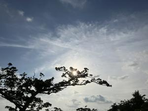
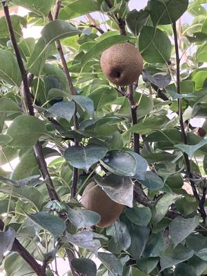

うるがいの話 ある日
最新: あおぞらビール【うるがいの話 ある日】とは 一日だけのプログです
『うるがいの話』の最新一日だけのプログで、通信料が少なく経済的だ。カニの画像をクリックすると全ての日付が載る『うるがいの話』サイトを表示します
|
|
【うるがいの話】 うるがい(ｳﾙｶﾞｲ urugai)とは、『もずくがに』の名前でとても大きくなります。 |
|---|---|
|
|
【カミマヤーの話】 猫のことを方言でマヤーといいます。カミマヤー（kamimayaa）とは、神の猫のことです。 |
|
【たながぁの音楽】 たながぁ（ﾀﾅｶﾞｰ tanagaa）とは手長えびのことで、何種類かあり大きいのは車 エビぐらいになります。 |

|
【ぶながぁの話】 ぶながぁ(ﾌﾞﾅｶﾞｰ bunagaa)とは、赤い髪の毛、赤い身体、そして身長は１ｍ２０ｃｍ ぐらい、川の蟹を食べているの目撃された。場所は沖縄県国頭郡大宜味村のと ある村僕の隣近所に住んでいる爺さんから、聞いた話です。 |
|
|
【ギーマの話】 ギーマ(giima)とは、山原の里山に咲くスズランに似た、 花を付けます。実は食べられます、 気が付くと口の周りが紫になっています。 |
2025年07月17日 (木）あおぞらビール
16:08
 
【ＮＨＫ公式】ＮＨＫ夜ドラ「あおぞらビール」夜のリラックスタ
イムをほのぼのしながら、川や山とれた自然の恵みや・・・、キャ
ンプ飯を、青空の下で冷えたビールと・・・・
退職したら、一人でキャンプしようと元ワンダーフォーゲル部の私
は、考えていたのですテレビのドラマのように、ケッ難儀なんです
ヨ、いまとなっては。
高校二年生の夏、ワンダーフォーゲル部で辺戸岬と奥部落の中間辺
りで、キャンプをしました。その日は大潮で夜、懐中電灯を持って
干上がったサンゴ礁を，廻ると小ぶりだが伊勢海老を捕まえました
そして、朝早く、リーフで３０センチほどのイラブチャーを釣りま
した。そして、それらは朝ごはんになりました。懐かしい、でもね
参加した部員の名前が、思い出せないのです、トホホ。今朝、サン
エーに買い物をしたとき、ヨメがセルフレジのもたもたしていたの
で『何をモタモタしているのか』と大きな声で、言ってしまった（
らしい）。家に帰ったら、軽い認知症が入った老人でっせ、恥ずか
しいと怒られた。気候変動で、熱中警戒アラート暑く、大雨警報、
そして高齢者になった今、もうキャンプはしないと思う、多分。